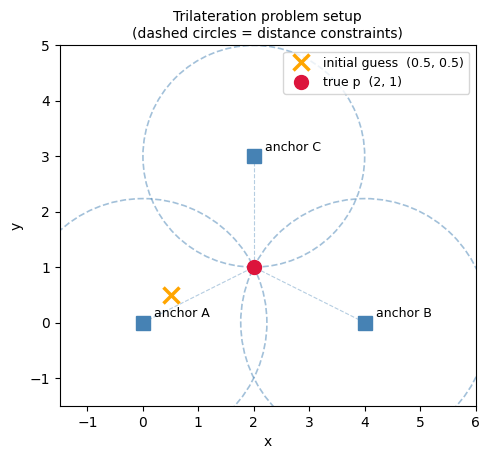
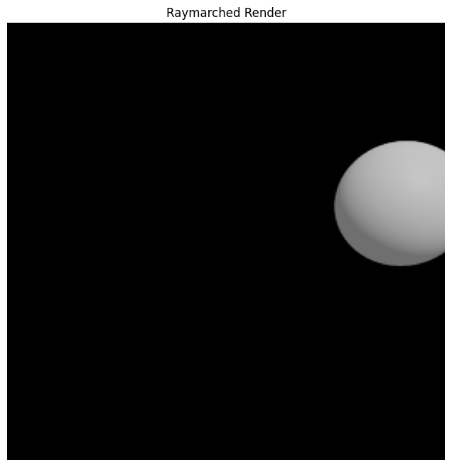

import jax.numpy as jnp
import matplotlib.patches as patches
import matplotlib.pyplot as plt
import numpy as np
from cadjoint import extract_parameters, functionalize
from cadjoint.constraints import DistanceConstraint, solve_constraints
from cadjoint.geometry import Vector
from cadjoint.render import render_raymarched
from cadjoint.sdf import Sphere, TranslateConstraint Solving in cadjoint
solve_constraints finds parameter values that satisfy all geometric constraints attached to a scene. It errors immediately if the system is under- or over-constrained, so you never silently get a wrong result.
Scene setup - trilateration
Three anchor points at known positions and one unknown point p. We give p a deliberately wrong initial guess - the solver will find the true position.
- Anchors are fixed (
free=False) - they are known constants. pis free (free=True) - the unknown we want to solve for.
We also define true_p = [2, 1, 0] - the intended solution - so we can compute exact target distances.
anchor_a = Vector(jnp.array([0.0, 0.0, 0.0]), free=False, name="anchor_a")
anchor_b = Vector(jnp.array([4.0, 0.0, 0.0]), free=False, name="anchor_b")
anchor_c = Vector(jnp.array([2.0, 3.0, 0.0]), free=False, name="anchor_c")
true_p = jnp.array([2.0, 1.0, 0.0]) # the answer we want the solver to find
p = Vector(jnp.array([0.5, 0.5, 0.0]), free=True, name="p") # wrong initial guess
scene = Translate(Sphere(radius=0.5), offset=p)Each distance constraint is a circle centered on an anchor with radius equal to the distance from that anchor to true_p. The solver finds where all three circles intersect.
anchors = {
"A": np.array([0.0, 0.0]),
"B": np.array([4.0, 0.0]),
"C": np.array([2.0, 3.0]),
}
true_xy = np.array([2.0, 1.0])
guess_xy = np.array([0.5, 0.5])
fig, ax = plt.subplots(figsize=(5, 5))
for _name, pos in anchors.items():
r = np.linalg.norm(true_xy - pos)
ax.add_patch(
patches.Circle(
pos, r, fill=False, linestyle="--", linewidth=1.2, color="steelblue", alpha=0.5
)
)
for name, pos in anchors.items():
ax.plot(*pos, "s", color="steelblue", markersize=10, zorder=5)
ax.annotate(f"anchor {name}", pos, textcoords="offset points", xytext=(8, 4), fontsize=9)
ax.plot(
*guess_xy,
"x",
color="orange",
markersize=12,
markeredgewidth=2.5,
zorder=5,
label="initial guess (0.5, 0.5)",
)
ax.plot(*true_xy, "o", color="crimson", markersize=10, zorder=6, label="true p (2, 1)")
for pos in anchors.values():
ax.plot(
[pos[0], true_xy[0]],
[pos[1], true_xy[1]],
"--",
color="steelblue",
linewidth=0.8,
alpha=0.4,
)
ax.set_xlim(-1.5, 6)
ax.set_ylim(-1.5, 5)
ax.set_aspect("equal")
ax.legend(loc="upper right", fontsize=9)
title = "Trilateration problem setup\n(dashed circles = distance constraints)"
ax.set_title(title, fontsize=10)
ax.set_xlabel("x")
ax.set_ylabel("y")
plt.tight_layout()
plt.show()
Degrees of freedom
p is a 3D Vector → 3 DOF. Each DistanceConstraint enforces one scalar equation → removes 1 DOF. We need exactly 3 constraints to reduce to 0 remaining DOF and uniquely solve for p.
Under-constrained error
Adding only one constraint leaves 2 DOF - solve_constraints raises a clear error.
DistanceConstraint(p, anchor_a, float(jnp.linalg.norm(true_p - anchor_a.value)))
try:
solve_constraints(scene)
except ValueError as e:
print(e)Under-constrained: 2 DOF remaining. (3 parameter DOF, 1 constraint equations)Fully constrain the scene
Add the remaining two constraints - one per anchor - each with the exact distance from true_p to that anchor.
DistanceConstraint(p, anchor_b, float(jnp.linalg.norm(true_p - anchor_b.value)))
DistanceConstraint(p, anchor_c, float(jnp.linalg.norm(true_p - anchor_c.value)))DistanceConstraint(p, anchor_c, d=2.0)Solve
solve_constraints runs Levenberg-Marquardt (via optimistix) starting from the wrong initial guess (0.5, 0.5, 0) and converges to the true position (2, 1, 0).
free_params, fixed_params, metadata = extract_parameters(scene)
solved_params = solve_constraints(scene, max_steps=10)
print("Initial p: ", p.value)
print("Solved p: ", solved_params["p"])Initial p: [0.5 0.5 0. ]
Solved p: [1.9999999 1. 0. ]Render at the solved position
The solved parameter dict is drop-in compatible with functionalize, so the constrained scene slots directly into the optimization workflow.
render_raymarched(
functionalize(scene)(solved_params, fixed_params),
camera_pos=jnp.array([3.0, 2.0, 3.0]),
resolution=(300, 300),
aa_samples=2,
)